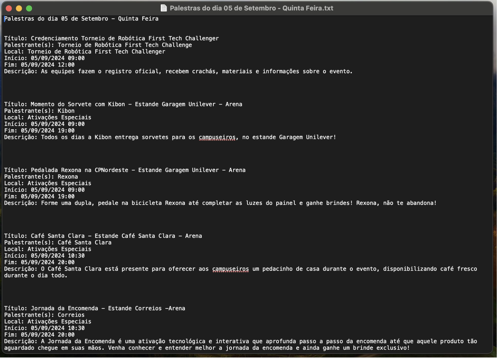
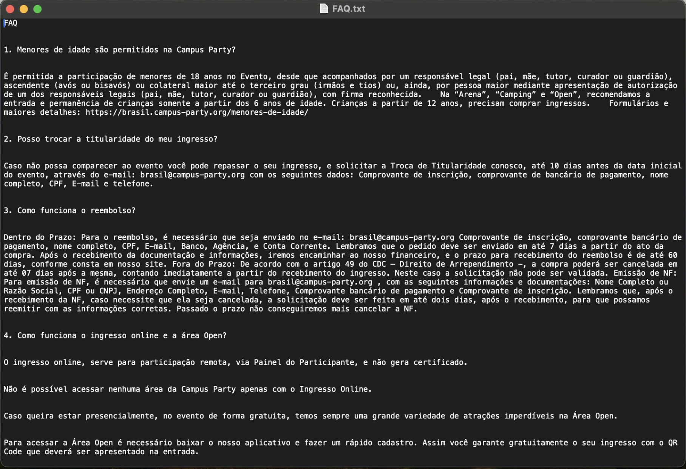

Campus Party NE
Assistente virtual criado para apoiar participantes durante a Campus Party Nordeste 2024.
Design conversacional
Um bot não oficial para ajudar campuseiros da Campus Party Nordeste 2024 a encontrar informações sobre programação, dúvidas gerais e contexto do evento.
Assistente virtual criado para apoiar participantes durante a Campus Party Nordeste 2024.
Projeto desenvolvido para a edição Nordeste da Campus Party.
Responder dúvidas com rapidez, contexto e uma voz coerente com a comunidade do evento.


Contexto
Marty foi desenvolvido como um chatbot para WhatsApp voltado a responder dúvidas sobre a Campus Party Nordeste 2024, com base em cronograma, FAQ e orientações sobre o evento.
Oferecer informações úteis para quem estava no evento, sem depender de buscas longas no site ou em redes sociais.
Estruturar o bot com base no cronograma, na FAQ e em temas descobertos durante o uso, mantendo clareza no atendimento.
Tom de voz
A voz foi definida a partir do material The Four Dimensions of Tone of Voice, da Nielsen Norman Group, e refinada para deixar o bot próximo, leve e útil em qualquer dúvida.
Informal e acessível, criando proximidade com os usuários e evitando uma comunicação engessada.
Referências culturais e elementos de cultura pop ajudam a manter a conversa leve e envolvente.
O tom pode ser mais solto e bem-humorado quando fizer sentido, sem perder a confiança da resposta.
Respostas animadas e positivas, reforçando a empolgação do evento e mantendo a orientação clara.
Design conversacional
O projeto evoluiu a partir do contexto do chatbot até a integração com os serviços necessários para o funcionamento no WhatsApp.
Definição da necessidade, do canal e do papel do Marty dentro da experiência do evento.
Construção da personalidade do bot com base em casualidade, diversão, irreverência e entusiasmo.
Organização do canal de entrada para que o bot pudesse operar dentro do fluxo esperado.
Preparação da base técnica para hospedar e sustentar a operação do assistente.
Conexão entre o modelo de IA e a interface do WhatsApp para viabilizar o fluxo final da conversa.
Artefatos de design
Os artefatos abaixo mostram como o conteúdo foi sendo ampliado ao longo do uso, incorporando novas dúvidas, respostas e temas que não estavam previstos na primeira versão.


Conteúdo
O conjunto de respostas foi ampliado com informações que passaram a aparecer com mais frequência durante o evento.
Uso real
As interações reais ajudaram a identificar lacunas, ajustar a priorização de temas e refinar o conteúdo disponível.
Base
Estruturação das informações essenciais do evento, incluindo cronograma, FAQ e orientações práticas para o usuário.
Aprendizados
A principal aprendizagem foi que o conteúdo do bot não poderia ficar fechado na FAQ inicial. O uso real trouxe temas novos, ajustou prioridades e mostrou que tom, contexto e síntese precisam caminhar juntos.
A forma como o bot responde interfere diretamente na confiança, na clareza e na continuidade da conversa.
O resultado melhora quando há boas instruções, contexto, limites e exemplos de comportamento esperado.
As perguntas reais revelam lacunas de conteúdo e indicam o que precisa entrar primeiro na base de respostas.
Respostas longas ou muito formais quebram o ritmo. O canal pede clareza e resposta rápida.